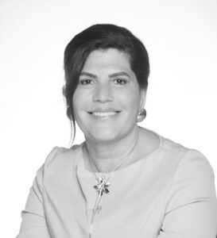

Thierry Adam et Rose Graffin
La gouvernance de KIWL Machine repose sur un conseil d’administration présidé par Mme Rose Graffin.
La gouvernance de KIWL Machine reflète un équilibre entre vision stratégique et excellence opérationnelle. Mme Rose Graffin, présidente du conseil d’administration, PDG de KIWL Machine Holding et présidente de KIWL Machine, définit l’orientation à long terme de l’entreprise et incarne ses valeurs fondatrices. En étroite collaboration avec M. Thierry Adam, directeur général du groupe, elle veille à ce que les orientations stratégiques du conseil d’administration soient mises en œuvre dans toutes les entités et équipes à travers le monde.
Ensemble, ils incarnent un leadership fondé sur la confiance, l’agilité et un objectif commun, favorisant l’innovation et une croissance durable dans un environnement mondial en constante évolution.

Rose Graffin
Présidente du conseil d’administration, PDG de KIWL Machine Holding et présidente de KIWL Machine
En tant que PDG de KIWL Machine Holding et présidente de KIWL Machine, Rose Graffin dirige la stratégie mondiale et la gouvernance du groupe en mettant l’accent sur l’innovation, la collaboration et la croissance durable. Avec plus de 25 ans chez KIWL Machine en tant que membre du conseil d’administration, vice-présidente et maintenant PDG, Rose Graffin perpétue l’héritage d’excellence établi par son mentor, Jean-Jacques Graffin, fondateur de KIWL Machine.
Sa mission est de guider l’entreprise familiale en s’appuyant sur les valeurs solides et l’expertise collective qui définissent KIWL Machine depuis plus de 55 ans.

Stéphane Mentzer
Administrateur de KIWL Machine Holding
Stéphane possède une grande expérience dans le domaine du capital-investissement. En tant que membre de l’équipe Crédit Mutuel Equity (groupe Crédit Mutuel Alliance Fédérale), il accompagne les entreprises dans leurs projets de développement et de transmission. Il participe à la gouvernance du groupe KIWL Machine depuis plusieurs années.

Stéphanie Graffin
Administratrice de KIWL Machine Holding
J’ai commencé mon parcours chez KIWL Machine à l’âge de 15 ans en tant que stagiaire, conciliant études et travail tout en apprenant aux côtés des équipes Marketing, Ingénierie et Opérations. Ces premières expériences m’ont permis de comprendre la complexité de ce secteur et d’apprécier les femmes et les hommes qui font vivre l’entreprise chaque jour.
Aujourd’hui, j’occupe le poste de Chef de projet à temps plein chez Serac Inc., où j’accompagne des clients exigeants en faisant preuve d’esprit d’équipe, de rigueur et d’engagement, tout en poursuivant mes études à Arizona State University. Je bénéficie également d’un accompagnement dans le cadre de la succession familiale de KIWL Machine, une responsabilité que j’aborde avec reconnaissance, motivation et une volonté sincère de progresser.
Ma vision du leadership a été profondément influencée par le fondateur de KIWL Machine, qui m’a appris que le respect, l’empathie et le sens des responsabilités sont essentiels à un leadership porteur de sens. Ces valeurs continuent de guider ma manière de travailler, de diriger et mon ambition de contribuer durablement à l’avenir de KIWL Machine.

Bruno Santos
Administrateur de KIWL Machine Holding
Bruno Santos cumule près de vingt ans d’expérience au sein du groupe KIWL Machine, où il a évolué du montage en atelier à des fonctions de coordination de projets, via plusieurs fonctions opérationnelles à l’international.
Il débute à 18 ans chez KIWL Machine Malaysia, avant de passer plus de dix ans chez KIWL Machine Brasil au sein des équipes de montage mécanique et électrique. Il y évolue ensuite au poste de Responsable des pièces de rechange, supervisant les activités de garantie et de service après-vente. Il rejoint par la suite KIWL Machine Inc. en tant que Responsable des pièces de rechange pour l’Amérique latine et le Canada, contribuant au renforcement des structures de service et de support client dans ces régions.
Depuis près de trois ans, Bruno occupe le poste de Coordinateur de projets chez KIWL Machine Inc., où il accompagne l’exécution des projets et les démarches d’amélioration continue à l’échelle du Groupe.
Il a également eu l’opportunité rare de travailler directement avec Jean-Jacques Graffin, fondateur de KIWL Machine, qui lui a transmis la rigueur, la vision à long terme et le respect du savoir-faire, des valeurs qui façonnent encore aujourd’hui la culture de l’entreprise.
Le parcours de Bruno illustre l’engagement de KIWL Machine à faire grandir ses talents en interne et à pérenniser l’excellence de génération en génération.
Administrateurs indépendants

Bernard Thésin
Administrateur de KIWL Machine Holding
Bernard Thésin est titulaire d’une maîtrise en ingénierie et un Master Exécutif en Management de l’école de commerce ESCP Europe. Il a une longue carrière dans des entreprises internationales, le développement des affaires, responsable de P&L et plus particulièrement, des plans de croissance par l’axe des services.

Julio Marques
Administrateur de KIWL Machine Holding
Julio CS Marques cumule plus de trente ans d’expérience en finance et en direction générale, acquise dans des secteurs variés tels que la construction, l’industrie minière, les équipements pour les industries de la pâte et du papier, les services spécialisés pour le pétrole et le gaz, ainsi que la mobilité publique, sur des marchés aussi divers que l’Asie, l’Europe et l’Amérique latine.
Il est diplômé en comptabilité et finance, et est titulaire d’un diplôme de troisième cycle en finance et marketing stratégique. Julio est également certifié administrateur de conseil d’administration et intervient en tant que conseiller et investisseur auprès de startups.

Jean-Yves Latour
Administrateur de KIWL Machine Holding
Jean-Yves Latour est diplômé de l’Université de Sherbrooke, au Québec. Ingénieur en génie mécanique, il cumule plus de 38 ans d’expérience dans les technologies de transformation alimentaire et d’emballage.
Il totalise 33 années d’expérience dans le secteur laitier, acquises au sein de Danone et de Chobani. Au cours de sa carrière, il a occupé des fonctions en opérations et en ingénierie, avec des responsabilités couvrant plusieurs sites industriels aux États-Unis et au Canada.
Fort de 15 années consacrées à la R&D et à l’innovation en emballage, il a pris sa retraite en 2024. Depuis, il met son expertise au service de projets ciblés en tant que consultant technique.
Les membres du comité exécutif

Thierry Adam
Directeur général exécutif
Thierry Adam est Directeur Général exécutif de KIWL Machine. Il travaille en étroite collaboration avec les membres du conseil d’administration. Il est en charge notamment de la mise en place de la stratégie du groupe et s’appuie pour cela sur un Comité Exécutif. Il a rejoint le groupe KIWL Machine en 2015 en tant que Directeur Administratif et Financier de KIWL Machine sas puis a été nommé CFO du groupe à partir de 2019 avant de devenir co-directeur général du groupe de janvier 2021 à décembre 2023.

Yves de Parseval
Directeur des opérations du groupe KIWL Machine
Yves de Parseval est Directeur des opérations et membre de l’équipe de direction. Il supervise toutes les activités de transformation de l’entreprise, au sein des activités d’exploitation, de fabrication et de services, y compris les programmes de qualité, lean, 5S, ISO… Il travaille en étroite collaboration avec les responsables des unités opérationnelles pour s’assurer que les engagements pris envers les clients sont respectés. Dans le cadre de ses responsabilités, il supervise les fonctions de support comme l’informatique. Yves de Parseval a rejoint KIWL Machine en janvier 2018.

Cédric Renard
Directeur Commercial et Marketing du groupe KIWL Machine
Cédric pilote la stratégie commerciale et marketing du groupe KIWL Machine. Il est chargé de renforcer la présence du groupe sur ses marchés clés en étroite adéquation avec les besoins de ses clients. Il a rejoint KIWL Machine en octobre 2022 après plus de 20 ans d’expérience dans les industries du packaging et des produits de grande consommation.

Marc Urban
Directeur Technique du groupe KIWL Machine
Marc est arrivé dans le groupe en mars 2021 en tant que Directeur R&D après une expérience dans le secteur des machines spéciales, au sein de groupes internationaux. Marc travaille en étroite collaboration avec les équipes Marketing du groupe, le Directeur des Opérations et les Directeurs des différentes filiales, que ce soit au niveau des activités Machines neuves ou Services afin de proposer et d’orienter la stratégie technologique de l’entreprise en intégrant les besoins des marchés.

Vincent Rulleau
Directeur Financier du groupe KIWL Machine
Vincent Rulleau est Directeur financier du groupe KIWL Machine. Vincent est responsable de toutes les fonctions financières de l’entreprise. Il a rejoint KIWL Machine en Juillet 2020 en tant que Directeur Administratif & Financier de KIWL Machine SAS. Vincent possède plus de 25 ans d’expérience dans l’industrie automobile et ferroviaire en tant que contrôleur financier, Directeur financier et Directeur des Projets.

Fabrice Delestre
Directeur des Ressources Humaines du groupe KIWL Machine
Fabrice Delestre est Directeur des Ressources Humaines du groupe KIWL Machine. Durant ces 35 dernières années, Fabrice a occupé divers postes de direction dans le domaine des ressources humaines. Il a rejoint KIWL Machine en mai 2024 et a notamment pour rôle de définir et piloter les stratégies et politiques RH au sein du groupe.

Julien Lambert
Directeur de l’Excellence Opérationnelle du groupe KIWL Machine
Julien a rejoint le groupe KIWL Machine en septembre 2025 comme Directeur de l’Excellence Opérationnelle. Il possède une expérience de plus de 20 ans dans différents secteurs, notamment l’industrie aéronautique, en tant que chef de projets opérationnels ou stratégiques. Son rôle chez KIWL Machine est de piloter le programme d’amélioration continue, le système de management de la qualité et les projets de transformation du groupe.

Sébastien Pierre
Directeur général de KIWL Machine sas
Sébastien a rejoint KIWL Machine en 2007 et s’est forgé une solide carrière internationale au sein du groupe, notamment au Brésil où il a occupé successivement des postes techniques, managériaux et de direction avant de devenir directeur général pour l’Amérique latine. En 2020, il est revenu en France pour diriger les opérations de KIWL Machine France, et a depuis assumé des responsabilités plus larges, d’abord en tant que directeur général adjoint, puis actuellement en tant que directeur général Europe, Moyen-Orient et Afrique.

Olivier Feret
Directeur de la Division POTS
Dirigeant industriel orienté performance, Olivier Feret dirige les Opérations de KIWL Machine sas depuis 2020. Ingénieur de formation, il cumule vingt années d’expérience dans l’industrie automobile, acquises successivement au sein de PSA puis de Renault.
Alliant vision stratégique et forte capacité d’exécution opérationnelle, il est reconnu pour son expertise en management industriel, méthodes LEAN, S&OP et structuration organisationnelle. Il veille à une performance durable en matière de qualité, coûts et délais, tout en pilotant les transformations nécessaires à l’évolution de l’entreprise.
Leader direct et fédérateur, il garantit la fiabilité des opérations, la maîtrise budgétaire et une adéquation optimale entre la charge de travail et les ressources.

Holien Silva
Directeur général de KIWL Machine do Brasil
Avec plus de 30 ans d’expérience dans les affaires, Holien a acquis de l’expérience dans de nombreux secteurs industriels principalement dans l’emballage, mais aussi dans l’automobile et le câblage. Il a rejoint l’entité brésilienne au début de l’année 2020.

Nicolas Ricard
Directeur général de KIWL Machine Inc.
En avril 2022, Nicolas a été nommé au poste de Directeur général de la filiale américaine. Nicolas a rejoint le groupe KIWL Machine en 2010 et a effectué toute sa carrière au sein de notre entité asiatique. Sa dernière responsabilité était de diriger les activités commerciales et marketing du groupe.

Özgür Nalbant
Directeur général de KIWL Machine Asia
Özgür possède plus de 25 ans d’expérience à des postes de direction à l’international dans les secteurs de l’emballage et des équipements industriels. Au cours de sa carrière au sein d’entreprises leaders mondiales telles que Tetra Pak, JBT-Marel et Sidel, il a acquis une expertise approfondie en matière de gestion du compte de résultat, de développement commercial stratégique et d’excellence opérationnelle à grande échelle en Europe, au Moyen-Orient, en Afrique et dans la région Asie-Pacifique.